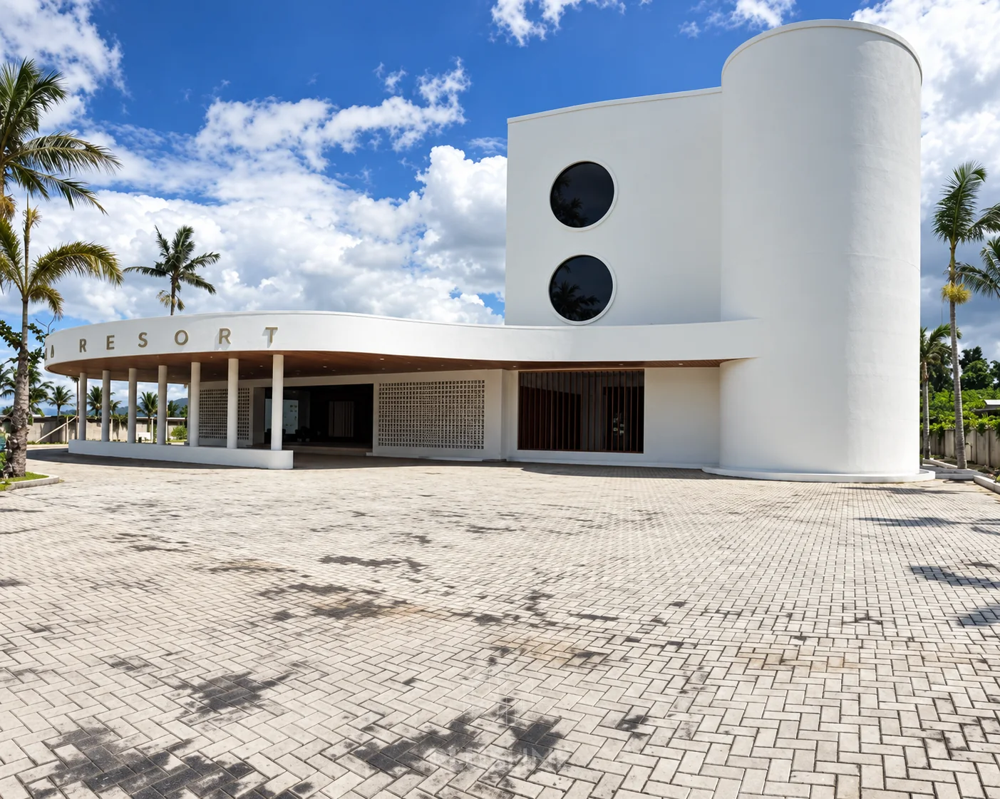

PLUSLINE / CIVIL · INTERIOR · RENOVATION
BUILDING
WITH PURPOSE.
From structure
to detail.
Good spaces begin
with a clear purpose.
PLUSLINE menghubungkan pekerjaan sipil, desain dan pengerjaan interior, hingga renovasi. Kami membangun dari awal dan mengolah setiap detail dengan perhatian pada fungsi, estetika, serta kebutuhan proyek Anda.
What we do ↗02 / OUR PORTFOLIO
Selected work.
03 / OUR EXPERTISE
Built beyond
the drawing.
Dari struktur bangunan sampai detail ruang. Satu pendekatan yang menyatukan kebutuhan konstruksi dan interior Anda.
01Civil & Structural+
Pekerjaan sipil dan struktur sebagai dasar untuk mewujudkan bangunan yang direncanakan.
02Design & Build+
Perencanaan desain dan pelaksanaan pekerjaan yang terhubung dari konsep hingga pengerjaan.
03Interior+
Desain dan pengerjaan interior dengan perhatian pada tata ruang, material, dan detail.
04Renovation+
Perbaikan dan pengembangan bangunan untuk kebutuhan ruang yang berubah.
05New Construction+
Pembangunan dari awal, mulai dari pekerjaan dasar hingga penyelesaian bangunan.
PLUSLINE menggunakan Bucku ↗ untuk mendukung pencatatan dan pengelolaan proyek secara terstruktur.